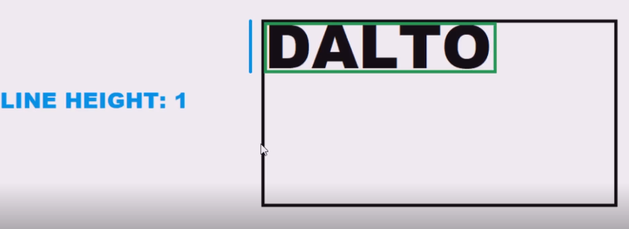
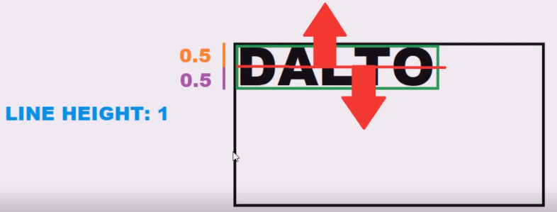
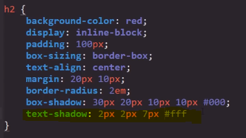

Propiedades de texto CSS
A continuación se definen las diferentes propiedades para el texto disponbles en CSS:
-
Font-Size
-
Se trata de la propiedad encargada de definnir el tamaño del texto, requiere que se le ingrese un valor númerico en alguno de los diferentes tipos de medidas que reconoce, para definir el tamaño del texto, el tamaño correspondiente a cada unidad numerica utilizada puede cambiar segun pual sea la unidad de medida utilizada.
Las medida que acepta pueden agruparse en dos grupos:
-
Medidas Fijas: Son aquellas expresadas en valores fijos y estandarizados que no depende de ningun factor externo, sin importar la sircunstancia siempre se expresaran en la misma dimención, las diferentes medidas de este tipo son:
PX: pixeles
Cm: Centimetros
mm: Milimetros
Pt: Puntos
-
Medidas Relativas: Se tratan de aquellas medidas que estan sujetas a las caracteriticas del contendor en el que se encuentran, son empleadas principalmente para los diseños responsive, ya que se ajustan en base a los cambios que ocurran en el contenedor en cuestión, las medidas aceptadas de este tipo son:
-
Rem:
-
Em: Esta unidad de medida cambia su valor en función de las dimenciones del contenedor del elemento actual, por lo tanto se basa en la herencia para definir el valor de cada unidad "em", para definir su valor toma encuenta propiedades como padding, margin, font-size y basicamente cualquier propiedad que acepte valores de medidas, que se aplique en el contenedor.
-
Viewport: Se trata de un valor que se ajusta en referencia a las dimenciones de la pantalla del dispositivo.
-
Nota: todas estas medidas se desenglosan de mejor forma en el apartado Teoria de las medidas.
-
Font-Family
-
Se trata de la propiedad encargada de definir la tipografia aplicada en la paguina o elemento en cuestión.
Line-Height
-
Esta propiedad define la altura de la linea del texto, para funcionar toma como base las dimenciones de texto actual, el concepto del funcionamiento de su medida es el siguiente.
Por defecto el valor de esta propiedad es de 1, lo que resulta en que las dimenciones de la linea sean iguales al espacio ocupado por el texto.
Esta medida toma como punto de origen la mitad del texto, distribuyendo la mitad de sus dimenciones hacia arriba y hacia abajo de la siguiete forma:
Por lo tanto sea cual sea el valor asigando a esta propiedad la mitad de este define la distancia del extremo superior de la linea despecto al centro del texto, mientra que la otra mitad hace lo propio con el extremo inferior.
La altura de la linea puede ser modificada para ocupar un espacio mayor al ocupado por el texto de la siguiente forma:

De esta forma se puede generar separación entre las diferentes lineas de un texto, creando estilos más entendibles y amigables para la vista,
Nota: A "line-height" se le puede asignar cualquier valor, incluyendo decimas, simplemente se utilizaron valores enteros para el ejemplo para facilitar la explicación, lo importante es entender que sea cual sea en valor aplicado este se dividira en dos, cada mitad de este se asignara a los secmentos superior e inferior de la linea.
Font-Weight
-
Se trata del grosor de las letras de la fuente, su valor se aplica en cientos es decir 100, 200, 300, etc hasta llegar a los 900.
El efecto de esta propiedad pude variar segun cual sea la fuente utilizada ya que en algunas se genera diferenciación con cada valor, mientras que otras pude que variaciones de valor pequeñas como de 100 a 200 no generen una diferencia en el texto
por ejemplo en la siguiete fuente se aplico inicialmente un valor de 100 seguido de uno de 700.
Text-aling
-
La función de esta propiedad es bastate simple, define el donde se ubicara el texto en función a su contenedor, los posibles valores de esta porpiedad son:
Cente: Establece que el texto se ubique en el centro del contenedor
Justify: Establece que el texto se justufique dentro de su contenedor
Left: Establece que el texto se ubicara a la izquierda del contenedor
Right: Establece que el texto se ubicara a la derecha del contendor
Start: define que el texto se ubicara en la parte superior del contenedor/p>
End: Define que el texto de ubicara en la parte inferior del contenedor
Direction
-
Se trata de una alternativa a la propiedad text-aling, sin embargo su efcto es basicamente el mismo.
Cuenta con los siguites valores para definir la orientación del texto:
ltr: Este valor significa "left to right" es decir de izquierda a derecha
rtl: Este valor significa "right to left" es decir de derecha a izquierda
ejmplo

Letter Spacing
-
Esta propieda permite definir la separación entre las letras de un texto, esta propiedad acepta unidades de medidas como valor :
Ejemplo
User-selected
-
La función de esta propiedad es exclusibamente inpedir que el usuario pueda seleccionar un texto, para lograr esto es nesario aplicar un valor none en la propiedad.
Ejemplo
Text-shadow
-
Esta propiedad funciona exactamente igual que box-shadow salvo por dos diferencias, la primera es que esta propiedd se aplica al texto, y la segunda radica en que no es necesario introducir el valor del ancho del borde de la sombra, ya que los texto no tiene bordes, esta propiedd carece de ese dato.
Aun así esta propiedad necesita de los otros valores para si correcto funcionamiento, esos valores son:
-
El primer valor a ingresar se trata de la ubicación de la sombra en el eje X
-
El segundo valor a ingresar se trata de la ubicación de la sombra en el eje Y
-
El tercer valor se trara del desenfoque, es decir el tamaño de la sombra
-
El cuarto y ultimo valor consiste en el color de la sombra, aligual que otras propiedades esta acepta los diferentes formatos de color CSS

Nota: Si se decea un efecto más intenso es posible repetir efecto las veces que hagan falta añadiendo nuevamente los valores siempre y caundo se respeten dos cosas, la primera es añadir una coma (,) entre cada repetición de los valores y la segunda es culminar la declaración de la propiedad con el punto y coma (;)

-
Color
-
Realmente esta propiedad no se considera de texto sin embargo ya que al utilizar esta propiedad entre otras cosas el texto se ve afectado se podria nombrar en este apartado, despues de todo urilzar la propiedad "color" es la forma adecuada de seleccioar el color a utilizar para un texto.
Extra
Inportar Fuentes
-
Para empezar hay que optener el link del archivo CSS que contenga la fuente deseada
-
Procedemos a llamarlo desde el archivo HTML de la paguina utilizando una etiqueta "link"
-
una ves llamado el archivo porcedemos a inplementarlo, para hacerlo simplemete aplicamos la porpiedad "font-family" en CSS con el respectivo nombre de la fuente importada
Nota: siempre que se importe una fuente lo mejor es colocar una segunda fuente que actuara como un respaldo en el caso de que no se pueda acceder a la fuente principal, de la siguiete forma:

Nota: Para evitar errores las fuentes estan sepadas por una coma (,)